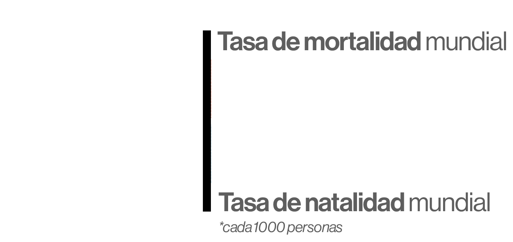

¿De qué muere el mundo?
escrito por: uri o'callaghan /inspiredby magazine of arts and culture editor /03 min read
Crecimiento de la población mundial desde el año 200 dC hasta el año 2000 dC. /United States Census Bureau. ©InspiredBy Magazine
Nosotros, Homo Sapiens, fuimos una vez lo que hoy consideraríamos una especie en peligro de extinción. En nuestra cuna natal, el valle del Rift de África Oriental, Homo Sapiens era tan solo un animal con poco menos de 10.000 ejemplares. Hoy, 7.600.000.000 de los mismos animales africanos habitan el planeta Tierra. Naciones Unidas calcula que para 2050, la población mundial habrá crecido hasta llegar a los 9.700 millones de personas.

+.
La clave del éxito -por llamarlo así- reside en la drástica reducción de la tasa de mortalidad. Durante la mayor parte de nuestra historia, tanto la tasa de natalidad cómo la de mortalidad han sido muy elevadas, pero casi siempre equivalentes, haciendo que el crecimiento de población fuera muy pequeño o a veces nulo. Solo a partir de la Revolución Industrial, la población mundial experimenta por primera vez unas grandes tasas de crecimiento, potenciadas por los avances en tecnología, salud, agricultura e higiene. Si las enfermedades, el hambre y las guerras eran las principales causas de muerte en la antigüedad, ¿De qué muere el mundo ahora?
Para eso, hemos pensado el ejercicio mental de reducir los 7.600.000.000 habitantes del planeta a solo 100, proporcionalmente. Si la Tierra estuviera poblada por cien habitantes, ¿de qué morirían?
El mundo en cien personas:
Y sus causas de muerte (Datos del 2017)
personas
Enfermedades Cardiovasculares
El 31% de la gente moriría de enfermedades del corazón. Más de 17.79 millones de personas mueren al año por problemas cardiovasculares. Representa la causa 1º de mortalidad en el mundo.
personas
Cáncer
El 17% de la gente moriría de la suma de los diferentes tipos de cánceres. Es la causa de más de 9.56 millones de muertes al año. Esta cifra equivale a la gente de 4 ciudades como Barcelona. Es la causa 2º de mortalidad en el mundo.
personas
Enfermedades e infecciones respiratorias
El 11% de la gente moriría de la suma de los diferentes tipos de enfermedades respiratorias e infecciones en las vías respiratorias. Es la causa de más de 6.47 millones de muertes al año.
personas
Demencia
El 4% de la gente moriría por demencia. Se trata de un deterioro de la memoria causado por diferentes enfermedades o lesiones que afectan al cerebro. Es la causa de más de 2.51 millones de muertes al año.
personas
Enfermedades digestivas
El 4% de la gente moriría a causa de la suma de las diferentes enfermedades digestivas. Es la causa de más de 2.38 millones de muertes al año en todo el mundo.
personas
Muertes neonatales
El 3% de los recién nacidos no llegarían a vivir más de unos pocos días. Este es el caso de más de 1.78 millones de vidas humanas anualmente.
personas
Diarrea
La mayoría de este tipo de muertes se producen en países subdesarrollados, en poblaciones donde el acceso a agua potable es inexistente. El agua contaminada puede transmitir enfermedades como la diarrea (entre otras). Tres de cada diez personas en el mundo carecen de agua potable en sus hogares. Por lo tanto, se trata de un tipo de muerte perfectamente evitable. Es la causa de muerte de 1.57 millones de personas anualmente.
En un mundo de cien habitantes
Causas de muerte de dos personas
Diabetes
Enfermedades
de riñón
Accidentes
de tráfico
y además...
Problemas
renales
Tuberculosis
Virus
del VIH/SIDA
...sumarían un total de muertes:
En un mundo de cien habitantes
Causas de muerte de una persona
Muertes
por suicidio
Enfermedad
de la Malaria
...¿y el resto?
Los 13 restantes morirían por otras causas, todas con menos del 1% de probabilidad, y por lo tanto, en un mundo de 100 personas, matarían a menos de una persona. Aun así, vale la pena destacar algunas de las más recurrentes, ya que a pesar de ser muy minoritarias, algunas de ellas ocupan los telediarios diariamente, haciendo que las veamos como amenazas verdaderas, cuando es mucho más probable morir por una enfermedad digestiva recurrente.
Homicidios
+
Muertes por
Terrorismo
+
Conflictos
armados
Así es. En un mundo de cien personas, el conjunto de muertes (asesinatos) por homicidios, terrorismo y conflictos armados, sumaría una sola muerte. Resulta sorprendente pensar que hoy en día mueren más personas por suicidio que por asesinato.
Ahogamientos
+
Muertes por
fuego
+
Desastres
naturales
Aunque la suma de muertes por causas relacionadas con la naturaleza sea baja, los futuros efectos provocados por el cambio climático harán aumentar esta cifra. Hablaremos de ello en futuros artículos, pero por ahora nos vale con destacar que Naciones Unidas pronostica la alarmante cifra de 200 millones de refugiados ambientales para 2050.
La gente faltante, las últimas 11 personas en morir, serían la suma del conjunto de todas las otras causas, minoritarias y diferentes. Entre ellas están el Párkinson, la meningitis, alcohol, drogas, envenenamiento...
Para finalizar, vale la pena volver a ver de nuevo la infografía para darse cuenta de que, seguramente, las mayores causas de muerte en el mundo no son para nada las que normalmente solemos imaginar. Es mucho más probable morir de meningitis que de terrorismo. También es más probable que tu muerte sea a causa del alcohol que de una guerra. Seguramente morirás por una infección respiratoria antes que por un abuso de las drogas. En el mundo en el que vivimos, hoy muere más gente por suicidio que por asesinato.
Diabetes
Enfermedades
de riñón
Accidentes
de tráfico
Problemas
renales
Tuberculosis
Virus
del VIH/SIDA
Muertes
por suicidio
Enfermedad
de la Malaria
Homicidios
+
Muertes por
Terrorismo
+
Conflictos
armados
Ahogamientos
+
Muertes por
fuego
+
Desastres
naturales
La gente faltante, las últimas 11 personas en morir, serían la suma del conjunto de todas las otras causas, minoritarias y diferentes. Entre ellas están el Párkinson, la meningitis, alcohol, drogas, envenenamiento...
Para finalizar, vale la pena volver a ver de nuevo la infografía para darse cuenta de que, seguramente, las mayores causas de muerte en el mundo no son para nada las que normalmente solemos imaginar. Es mucho más probable morir de meningitis que de terrorismo. También es más probable que tu muerte sea a causa del alcohol que de una guerra. Seguramente morirás por una infección respiratoria antes que por un abuso de las drogas. En el mundo en el que vivimos, hoy muere más gente por suicidio que por asesinato.